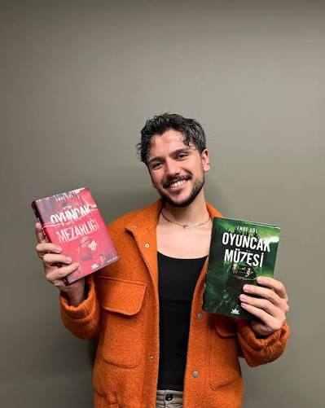

Emre Gül'ün Hayatı ve Yazarlık Serüveni
Emre Gül, polisiye, gerilim ve korku türlerinde kaleme aldığı eserleriyle tanınan Türk yazarlardan biridir. 1998 yılında doğan yazar, küçük yaşlardan itibaren yazmaya ilgi duymuştur. Sinema ve Televizyon eğitiminin ardından Sanat Tarihi alanına yönelen Emre Gül, sanatın farklı dallarından edindiği deneyimleri yazarlık çatısı altında birleştirmiştir.
Yazarlığa İlk Adımları
Emre Gül'ün yazarlık serüveni, ilkokul ve ortaokul yıllarında Türkçe derslerinde yazdığı kompozisyonlarla başlamıştır. Yazmaya duyduğu ilgi, lise yıllarında daha da güçlenmiştir. 10. sınıfta, ailevi sebeplerle yaşadığı taşınma sürecinin getirdiği yalnızlık, onun kitaplara ve yazmaya daha fazla yönelmesine neden olmuştur.
Bu dönemde yazmayı kendisi için bir kaçış ve arkadaş olarak gören yazar, hayal dünyasını hikâyeleri aracılığıyla ifade etmeye başlamıştır. Zamanla bu ilgi, profesyonel yazarlığa uzanan bir serüvene dönüşmüştür.
İlk Eseri ve Profesyonel Yazarlık
Emre Gül'ün kariyerinin başlangıcı olarak kabul edilen ilk kitabı Küllerin Dansı'dır ama asıl popüler olmasını sağlayan Bilinmeyen Numara serisinin başlangıcı Nar'dır. 2014 yılında Wattpad platformunu keşfeden yazar, başlangıçta okuyucu olarak yer aldığı platformda zamanla kendi hikâyelerini paylaşmaya başlamıştır.
Hikâyelerinin okuyucular tarafından ilgi görmesi, yayınevlerinden teklifler almasını sağlamıştır. Marmara Üniversitesi'ni kazandığı günün ertesi günü Ephesus Yayınları'ndan aldığı teklifle profesyonel yazarlık hayatına adım atmıştır.
İlham Kaynakları ve Yazım Tarzı
Emre Gül, yazdığı karakterleri birer arkadaşı gibi gördüğünü ifade etmektedir. Eserlerinde yalnızlık, kişisel deneyimler ve müzik önemli ilham kaynakları arasında yer almaktadır. Özellikle Toygar Işıklı'nın melodileri, yazım sürecinde kendisine eşlik eden unsurlardandır.
Yazarın anlatım tarzı, zaman içerisinde değişim göstermiştir. Başlangıçta karakterlerinden kopamadığı için hikâyelerini uzatma eğiliminde olan Emre Gül, günümüzde daha kısa, keskin ve vurucu bir anlatımı benimsemektedir. Yazarlık anlayışının temelinde ise az kelimeyle çok şey anlatmak yer almaktadır.
Oyuncak Müzesi ve Kariyerindeki Dönüm Noktaları
Emre Gül'ün kariyerinde önemli bir yere sahip olan Oyuncak Müzesi, farklı anlatım biçimiyle dikkat çekmektedir. Hikâyenin katilin gözünden anlatılması, okuyucunun olaylara alışılmışın dışında bir bakış açısıyla yaklaşmasını sağlamaktadır.
Bu eserle birlikte okuyucuları tarafından "Zorbalar Prensi" olarak anılmaya başlayan yazar, karakterlerin psikolojisini ve karanlık yönlerini anlatırken farklı bir anlatım dili kullanmaktadır. Kendi ifadesine göre Oyuncak Müzesi, katilin zihnini anlamaya çalışması gerektiği için yazarken en çok zorlandığı eserlerden biridir.
Bunun yanı sıra, daha önce kaleme aldığı Güneşi Söndürmem Gerek filminin dijital bir platformda en çok izlenenler arasına girmesi, senaristlik hayalleri kuran yazar için önemli bir deneyim olmuştur.
Yazarlık Felsefesi
Emre Gül için yazarlık, yalnızca hikâyeler oluşturmak değil, aynı zamanda kişinin kendi dünyasını kelimeler aracılığıyla ifade edebilmesidir. Sanatın farklı dallarından beslenen yazar, karakterlerini ve hikâyelerini oluştururken kişisel deneyimlerinden de yararlanmaktadır.
Yazarlık hayali kuranlara özgün olmalarını, kendilerine inanmalarını ve emek vermekten vazgeçmemelerini tavsiye eden Emre Gül, edebiyatın kişisel deneyimleri farklı dünyalara dönüştürebilen güçlü bir anlatım biçimi olduğuna inanmaktadır.